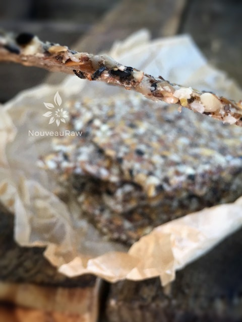

Sesame Onion Almond Flax Crackers

~ raw, vegan, gluten-free ~
WANT AD:
I am a hardy, strong cracker looking for an appetizing job. My foundation is firm and I can carry a full load. I don’t break easily under pressure and my personality isn’t over-powering. I am really seeking more of a supporting role, rather than being the main attraction.
I do work well one on one but I do much better in a job that requires teamwork. I have been known to snap under pressure and even if I should crumble in some circumstances, I am confident that you will find me pleasurable. If you run a check on me you will find that I come from a pretty seedy background.
At times I have been known to go a little nuts but I have what it takes to hold myself together. So, please, give me a chance, put me on the payroll!
Ingredients:
- 2 cups flax seed
- 2 cups raw almond flour
- 1/3 cup dehydrated onion flakes
- 2 tsp Himalayan pink salt
- 1/2 cup black sesame seeds
- 5 cups water
Preparation:
- In a large bowl, combine the flax seeds, almond flour, dried onion flakes, salt, sesame seeds, and water. Stir well, making sure to work out any lumps. Set aside for 30+ minutes to thicken.
- The batter will become very thick and there shouldn’t be any standing water in the bowl.
- Spread on non-stick dehydrator sheets about 1/4 inch thick. This made 3 (14 x 14) sheets.
- Dehydrate at 145 degrees (F) for 1 hour then reduce to 115 degrees (F) degrees for 4-6 hours.
- Remove the non-stick sheets and place the crackers upside down on mesh screens. Score and continue to dehydrate at least 8 more hours or until dry.
- Allow the crackers to cool and then snap apart. Store in an air-tight container.
Culinary Explanations:
- Why do I start the dehydrator at 145 degrees (F)? Click (here) to learn the reason behind this.
- When working with fresh ingredients it is important to taste test as you build a recipe. Learn why (here).
- Don’t own a dehydrator? Learn how to use your oven (here). I do however truly believe that it is a worthwhile investment. Click (here) to learn what I use.

© AmieSue.com